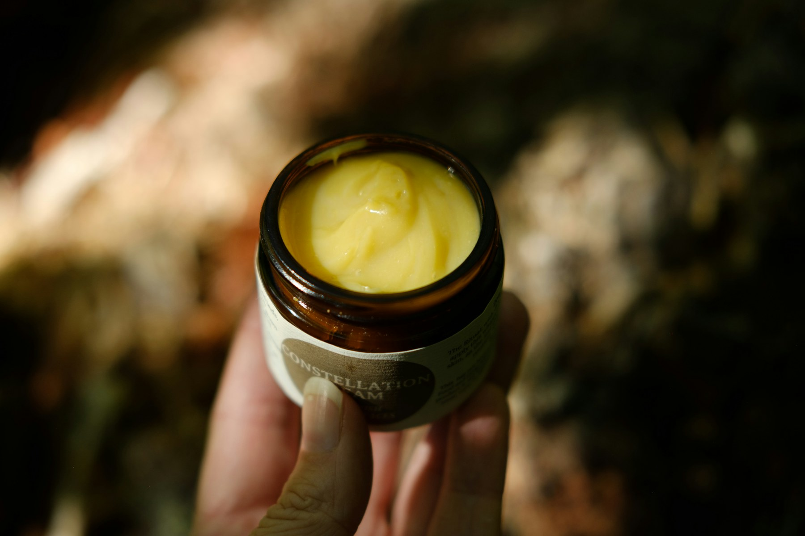

Harmonic Reset
A focused session for tension, nervous-system settling, and reconnecting with breath, pressure, and ease without overworking the system.
$95Transformational touch for real bodies
Honeycomb Harmonic is a practical studio and product lab: grounded therapeutic touch, practitioner-minded Harmonic Touch Balm, and classes that turn felt sense into usable skill.
Less noise. More contact.
Less fixing. More intelligent pressure.
Less performance. More practitioner-grade craft.
The philosophy
Honeycomb Harmonic works from a simple premise: the nervous system learns through felt evidence. Skillful touch, clear attention, steady pacing, and honest education can give the body better options than bracing, collapse, or pushing through.
The work is built for depth without theatrics. Sessions and classes may include therapeutic bodywork, myofascial listening, pressure education, breath, movement, stillness, and conversation when it serves the work.
Bodywork
A focused session for tension, nervous-system settling, and reconnecting with breath, pressure, and ease without overworking the system.
$95More time for layered work: slow tissue engagement, structural attention, and integration instead of chasing release for its own sake.
$135A longer container for bodywork, somatic education, and practice design for people in a bigger life transition or practitioners refining their own touch.
$180
The balm store
A two-balm bodywork line developed from the legacy balm system: West African shea, avocado butter, mango butter, beeswax, arrowroot, and disciplined skin feel. The regular balm is made for glide, grip, and a clean finish; the pain balm is the more targeted companion for deeper comfort work.
Draft storefront pricing and placeholder image. Product language is intentionally comfort- and bodywork-focused, not medical-claim language. Swap in the logo and container photos once the final product shots are available.
Classes & circles
Simple body literacy, pressure awareness, and regulation skills that belong in ordinary life, not just in a workshop container.
Monthly / 90 minutesHands-on refinement for massage therapists, bodyworkers, and care workers who want cleaner contact, better pacing, and more precise pressure.
Small cohort / 4 weeksA practical product-making lab for bodywork mediums, texture design, ingredient identity, and batch thinking.
Workshop / seasonalWho this is for
Clients carrying stress, transition, old injury patterns, or the quiet fatigue of staying functional for too long.
Practitioners who want their touch to become more precise, less performative, and more responsive.
Makers and students who care about formulation, source identity, clean claims, and embodied education that survives contact with real life.
Start here
Use this form for sessions, class interest, balm orders, practitioner questions, or collaborations. Netlify can capture these messages as soon as the site is published.